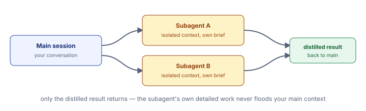

<!DOCTYPE html>
<html lang="en">
<head>
<meta charset="UTF-8">
<meta name="viewport" content="width=device-width, initial-scale=1.0">
<title>W2D0 · 05 Subagents &amp; Specs</title>
<link rel="stylesheet" href="../css/session-guide.css">
</head>
<body>
<p class="site-index-link"><a href="../index.html">← Week 2 course index</a></p>

<header class="hero">
  <p class="eyebrow">W2D0 · Topic 05 · <a href="00_orientation.html" style="color:#cbd8ff;">index</a> · <a href="04_skills.html" style="color:#cbd8ff;">← 04</a> · <a href="06_hooks.html" style="color:#cbd8ff;">06 →</a></p>
  <h1>Subagents — defining, dispatching, and the spec format</h1>
  <p>You've already used subagents throughout Week 2 (the Agent tool). This topic is how to <i>define your own</i>, not just use the built-in ones.</p>
</header>

<main>

<section id="concept">
  <h2>Concept: Subagents — Isolated Specialists</h2>
  <div class="step">
    <h3>The Big Picture</h3>
    <p>A <b>subagent</b> is a specialized assistant with its own isolated session. You dispatch it with a task ("find all TODO comments and summarize them"), it works independently reading files and running commands, and only a clean summary comes back to your main chat.</p>

    <p><b>Key word: isolation.</b> Unlike skills (which run in your context) or custom commands (which are just prompts), subagents have completely separate sessions. This prevents big, noisy investigations from flooding your main context with intermediate details.</p>

    <h3>Why Isolation Matters</h3>
    <p>Imagine you ask Claude to "find all security issues in my code." Without isolation, Claude would:</p>
    <ul>
      <li>Read 50 files</li>
      <li>Run multiple security tools</li>
      <li>Think out loud about each finding</li>
      <li>Fill your context window with all that intermediate noise</li>
    </ul>

    <p>With a subagent, Claude does all that work in an isolated session, then returns only: "Found 3 security issues: X, Y, Z." Your main context stays clean.</p>

    <h3>Subagent Spec Format</h3>
    <p>You define a subagent as a markdown file with frontmatter:</p>
    <pre><code">---
name: my-subagent
description: Short, one-line description of what this agent does and when Claude should delegate to it
tools: Read, Grep, Bash
---

You are a specialized expert at [specific task]. When called, you will:
1. Read the provided input/file
2. Analyze for [specific patterns]
3. Return a concise summary with exact findings

Do NOT report intermediate thinking — only final results.</code></pre>

    <p>The frontmatter tells Claude Code:</p>
    <ul>
      <li><code>name</code> (required) — Unique identifier, used to invoke it — mention it by name in a prompt ("use the my-subagent subagent..."), @-mention it directly (<code>@agent-my-subagent</code>), or run a whole session as it with <code>claude --agent my-subagent</code></li>
      <li><code>description</code> (required) — What it does, and when Claude should auto-delegate to it. There's no separate <code>trigger</code> field — Claude reads <code>description</code> itself to decide when to invoke the subagent, so put trigger phrases there</li>
      <li><code>tools</code> (optional) — Which tools it's allowed to use, as a comma-separated list (sandboxing); if omitted, it inherits every tool available to subagents</li>
    </ul>

    <h3>Project vs. User Scope</h3>
    <p>Subagents go here:</p>
    <ul>
      <li><b>Project-scoped:</b> <code>.claude/agents/agent_name.md</code> — For domain-specific tasks (security review for your codebase, doc freshness, API schema validation)</li>
      <li><b>User-scoped:</b> <code>~/.claude/agents/agent_name.md</code> — General-purpose specialists (code reviewer, test writer, documentation generator) you want everywhere</li>
    </ul>

    <h3>Built-In Subagents You've Already Used</h3>
    <p>Claude Code comes with these subagents ready to use out of the box:</p>
    <ul>
      <li><code>Explore</code> — Fast, read-only codebase search agent. When you say "find all API endpoints," it reads selectively and returns exact matches.</li>
      <li><code>general-purpose</code> — Catch-all for complex, multi-step tasks that need both exploration and edits. Uses all available tools.</li>
      <li><code>Plan</code> — Read-only research agent used during plan mode to gather context before Claude proposes an implementation strategy.</li>
    </ul>
    <p>These are genuinely bundled with Claude Code. By contrast, a subagent like <code>policy-research-specialist</code> — reading policy documents and returning answers for <code>data/insurance/policies</code> lookups — is <b>not</b> a built-in: it's a custom, project-specific subagent you'd define yourself (as a markdown file under <code>.claude/agents/</code>) for this particular repo's insurance/logistics domain. Don't expect it to exist in a fresh Claude Code install.</p>

    <h3>When to Use Subagents vs. Skills vs. Commands</h3>
    <table>
      <tr>
        <th>Use Subagent When:</th>
        <th>Use Skill When:</th>
        <th>Use Command When:</th>
      </tr>
      <tr>
        <td>Task is big, detailed, noisy (investigating 100 files)</td>
        <td>Task is a quality check or standard (review checklist)</td>
        <td>Task is a fixed template (git diff summary)</td>
      </tr>
      <tr>
        <td>You want results isolated from main chat</td>
        <td>You want results woven into main chat</td>
        <td>You want a shortcut for a common prompt</td>
      </tr>
      <tr>
        <td>Task needs its own session to avoid context pollution</td>
        <td>Task enhances what you're already doing</td>
        <td>Task is a re typable prompt</td>
      </tr>
    </table>

    <figure class="concept-figure">
      
      <figcaption>Isolation: subagent does detailed work in its own session; only the summary returns to your main chat.</figcaption>
    </figure>
  </div>
</section>

<section id="use-cases">
  <h2>Real-World Use Cases</h2>
  <div class="step">
    <h3>1. Codebase-Wide Security Audit</h3>
    <p><b>The problem:</b> You want a security review of your entire codebase, but running it in your main session would be noisy and huge.</p>
    <p><b>The solution:</b> A subagent <code>security-auditor</code> that searches for vulnerable patterns: hardcoded secrets, SQL injection vectors, unvalidated user input, insecure crypto, etc. It reads dozens of files independently.</p>
    <p><b>The result:</b> Your main chat stays clean. The subagent returns only: "Found 5 security issues: [list]." You follow up in main chat if needed.</p>

    <h3>2. API Documentation Completeness Check</h3>
    <p><b>The problem:</b> You have a REST API with 50 endpoints. Are they all documented? Do docstrings have examples? Are error codes listed?</p>
    <p><b>The solution:</b> A subagent <code>api-doc-checker</code> that reads all route files, checks each function for docstrings, validates they have examples and error codes listed.</p>
    <p><b>The result:</b> Subagent returns: "25 endpoints documented, 25 missing. Here are the gaps." You know exactly what to fix.</p>

    <h3>3. Test Coverage Analysis Across the Project</h3>
    <p><b>The problem:</b> Which parts of your code have tests? Which don't? Coverage reports are hard to interpret.</p>
    <p><b>The solution:</b> A subagent <code>test-coverage-mapper</code> that reads your test suite, maps which functions are tested, identifies untested code paths and critical gaps.</p>
    <p><b>The result:</b> Clear report: "Core authentication: 95% tested. Payment processing: 60% tested (gaps: refund handling). Database migrations: 0% tested."</p>

    <h3>4. Technical Debt Inventory</h3>
    <p><b>The problem:</b> Your team has TODOs and FIXMEs scattered throughout the code. You don't have a central list. People don't know what's on the backlog.</p>
    <p><b>The solution:</b> A subagent <code>debt-scanner</code> that finds all TODO, FIXME, HACK comments, extracts their context, and groups them by priority/module.</p>
    <p><b>The result:</b> You get an organized list: "Urgent (5): [list]. Medium (12): [list]. Low (8): [list]." No more lost TODOs.</p>

    <h3>5. Dependency Analysis for Upgrade Planning</h3>
    <p><b>The problem:</b> You have dozens of dependencies. Some are outdated. You want to know which are safe to upgrade, which have breaking changes, which are no longer maintained.</p>
    <p><b>The solution:</b> A subagent <code>dependency-auditor</code> that reads your dependency files, checks each library's last update date, breaking changes, and security advisories.</p>
    <p><b>The result:</b> "FastAPI: safe to upgrade (no breaking changes). Django: breaking changes in 5.0, needs migration. numpy: outdated by 6 months."</p>
  </div>
</section>

<section id="handson">
  <h2>Hands-on Practice: Five Examples</h2>

  <div class="step">
    <h3>Example 1: List Available Subagents</h3>
    <span class="where-tag where-claude">Claude Code chat panel</span>

    <p><b>Step 1:</b> See what's already defined:</p>
    <pre><code>/agents</code></pre>

    <p><b>What you'll see:</b> On current Claude Code versions, <code>/agents</code> just prints a short reminder to ask Claude to create/manage subagents, or to edit <code>.claude/agents/</code> / <code>~/.claude/agents/</code> directly (older versions opened an interactive list/creation wizard here instead). Ask Claude directly — e.g. "what subagents are available?" — to get the actual list with descriptions: built-in ones include Explore, Plan, general-purpose, and any project-specific ones you've defined.</p>

    <p><b>Step 2:</b> Note: <code>claude agents --json</code> is a real command, but it does something different from listing subagent <i>definitions</i> — it prints currently running/completed background agent sessions (from the "agent view" feature) as JSON, not the roster of subagent types like Explore or your custom agents.</p>
    <pre><code>claude agents --json</code></pre>

    <div class="checkpoint">
      <b class="tag">Checkpoint</b>
      You've discovered what subagents are available and understand the difference between built-in (always there) and custom (you define them).
    </div>
  </div>

  <div class="step">
    <h3>Example 2: Create a Simple Subagent</h3>
    <span class="where-tag where-claude">Claude Code chat panel</span>

    <p><b>Step 1:</b> Ask Claude to create a project-scoped subagent:</p>
    <div class="prompt-box">
      <div class="prompt-label">Prompt</div>
      <pre><code>Create a project-scoped subagent at .claude/agents/todo_scanner.md that:
- Scans the entire codebase for TODO and FIXME comments
- Extracts the comment text and file location
- Groups them by priority (urgent if mentions "ASAP", medium by default, low if says "someday")
- Returns a structured summary

Include in the spec: when to invoke this, what tools it needs, and example output.</code></pre>
    </div>

    <p><b>What's happening:</b> Claude creates a markdown file with frontmatter (name, description, tools) and detailed instructions for the subagent.</p>

    <p><b>Step 2:</b> Verify the file was created:</p>
    <pre><code># On Mac/Linux
ls -la .claude/agents/

# On Windows (PowerShell)
Get-ChildItem .\.claude\agents\</code></pre>

    <p><b>Step 3:</b> Read the file to see the spec:</p>
    <pre><code># On Mac/Linux
cat .claude/agents/todo_scanner.md

# On Windows (PowerShell)
Get-Content .\.claude\agents\todo_scanner.md</code></pre>

    <p><b>What you'll see:</b> Frontmatter with <code>name</code>, a <code>description</code> that includes when to invoke it (there's no separate <code>trigger</code> field), and a <code>tools</code> list restricting what it can use. Then the detailed instructions for the subagent.</p>

    <div class="checkpoint">
      <b class="tag">Checkpoint</b>
      The subagent spec file exists and is properly formatted.
    </div>
  </div>

  <div class="step">
    <h3>Example 3: Dispatch Your Subagent</h3>
    <span class="where-tag where-claude">Claude Code chat panel</span>

    <p><b>Step 1:</b> Ask Claude to dispatch your newly created subagent:</p>
    <div class="prompt-box">
      <div class="prompt-label">Prompt</div>
      <pre><code>Dispatch the todo_scanner subagent on this project. Have it scan for all
TODO and FIXME comments and return a structured summary organized by priority.</code></pre>
    </div>

    <p><b>What's happening:</b> Claude Code starts an isolated session with the todo_scanner subagent. The subagent reads files, finds TODOs, and returns only a clean summary back to your main chat.</p>

    <p><b>What you should see:</b></p>
    <ul>
      <li>A notice that the subagent is dispatched (isolated session starting)</li>
      <li>A summary of TODOs, grouped by priority</li>
      <li>Exact file paths and line numbers</li>
      <li>NOT all the intermediate file reads and analysis — that stays isolated</li>
    </ul>

    <div class="checkpoint">
      <b class="tag">Checkpoint</b>
      Your subagent ran in isolation and returned a clean summary. Your main context wasn't polluted with intermediate details.
    </div>
  </div>

  <div class="step">
    <h3>Example 4: Test the Isolation Boundary</h3>
    <span class="where-tag where-claude">Claude Code chat panel</span>

    <p><b>Setup:</b> Prove that the subagent truly is isolated — it doesn't have access to your main conversation history.</p>

    <p><b>Step 1:</b> In your main conversation, mention something — anything. Example:</p>
    <div class="prompt-box">
      <div class="prompt-label">Prompt</div>
      <pre><code>Remember: I love the color blue and I always use async/await in Python.</code></pre>
    </div>

    <p><b>Step 2:</b> Now dispatch the subagent and ask it about your preference (as part of the dispatch brief):</p>
    <div class="prompt-box">
      <div class="prompt-label">Prompt</div>
      <pre><code>Dispatch the todo_scanner subagent. As a test, ask it: "What color does the
user love?" Report exactly what it says.</code></pre>
    </div>

    <p><b>What you should see:</b> The subagent has no idea. It might say "I don't have that information" or "not provided in my brief."</p>

    <p><b>What's happening:</b> This proves complete isolation. The subagent has only the context from its dispatch brief, not your main chat history. This is why isolation prevents context pollution—it's a separate session.</p>

    <div class="checkpoint">
      <b class="tag">Checkpoint</b>
      The subagent had no access to your previous statements. Isolation confirmed.
    </div>
  </div>

  <div class="step">
    <h3>Example 5: Create a User-Scoped Subagent</h3>
    <span class="where-tag where-claude">Claude Code chat panel</span>

    <p><b>Setup:</b> This subagent is general-purpose, not specific to this project. Create it at user scope.</p>

    <p><b>Step 1:</b> Ask Claude to create a user-scoped subagent:</p>
    <div class="prompt-box">
      <div class="prompt-label">Prompt</div>
      <pre><code>Create a user-scoped subagent at ~/.claude/agents/test_writer.md that:
- Takes a source file as input (e.g., a Python module)
- Analyzes what functions/methods exist
- Generates test cases for edge cases and error conditions
- Returns a complete test file ready to run

Include a description with clear examples of when to invoke it, plus an allowed tools list.
Show me the exact file path.</code></pre>
    </div>

    <p><b>Step 2:</b> Verify it was created in your home directory:</p>
    <pre><code># On Mac/Linux
ls -la ~/.claude/agents/

# On Windows (PowerShell)
Get-ChildItem $env:USERPROFILE\.claude\agents\</code></pre>

    <p><b>Step 3:</b> This subagent is now available in every project. Test it with any Python file:</p>
    <div class="prompt-box">
      <div class="prompt-label">Prompt</div>
      <pre><code>Dispatch the test_writer subagent on W2D0/capstone/data_prep.py. Have it
generate comprehensive test cases for the functions in that file.</code></pre>
    </div>

    <p><b>What's happening:</b> Your user-scoped subagent is now a permanent tool you carry across all projects. It will follow you everywhere, just like your user-level CLAUDE.md.</p>

    <p><b>Key difference:</b> Project-scoped subagents live in <code>.claude/agents/</code> (in the repo, shared). User-scoped live in <code>~/.claude/agents/</code> (in your home directory, personal).</p>

    <div class="checkpoint">
      <b class="tag">Checkpoint</b>
      The subagent exists in your home directory. It will be available in every future project you open.
    </div>
  </div>

</section>

</main>

<footer class="page-footer">W2D0 · Claude Code Foundations — 05 Subagents &amp; Specs</footer>
<p class="site-index-link bottom"><a href="../index.html">← Back to course index</a></p>
<script src="../css/lab-readme.js"></script>
</body>
</html>
